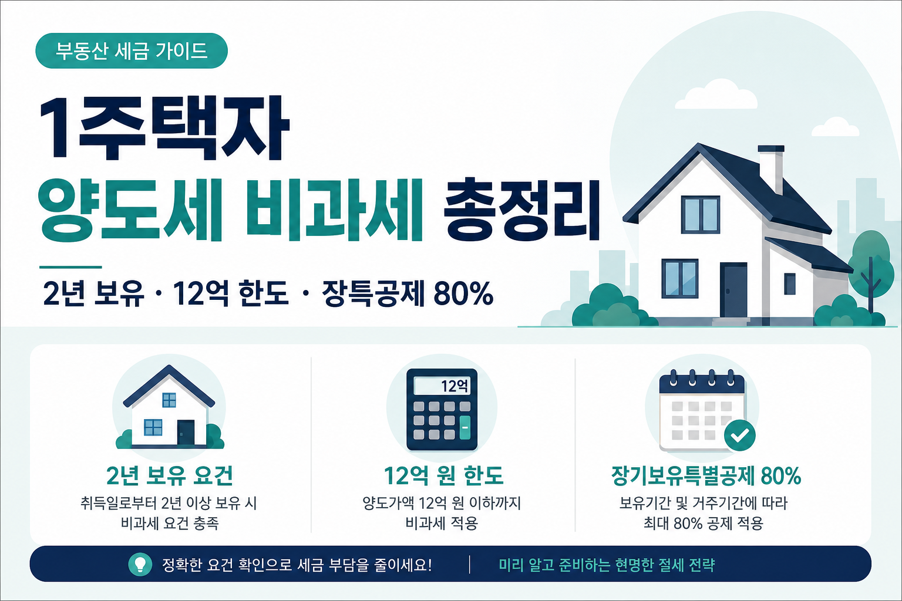

1주택자 집 팔 때 양도세 안 내는 법 (2026 비과세 요건 총정리)
2년 보유·12억 한도·장특공제 80%·일시적 2주택 3년 — 초보 눈높이로

“내 집 한 채인데, 팔면 세금 폭탄 맞는 거 아니야?” 부동산 공부를 시작한 월급쟁이인 저도 처음엔 그랬습니다. 1주택이라는 말만 들으면 0원인 줄 알았는데, 보유 기간·거주·세대·가격까지 조건이 있습니다. 오늘은 확정된 기준만으로, 1세대 1주택 비과세를 초보 눈높이로 풀어 보겠습니다.
먼저 읽어주세요
본 글은 정보 제공이며 세무·투자 자문이 아닙니다. 개인별 취득 시점·조정대상지역 여부·세대 구성·양도가액이 다르면 결과가 달라집니다. 정확한 요건·계산은 국세청 홈택스(hometax.go.kr) 및 세무 전문가 확인 필수입니다. 조정대상지역 지정은 시기·지역에 따라 바뀌며, 거주요건은 취득 당시 기준입니다. 다주택 중과 등 한시 조치는 자주 바뀌므로 최신 확인이 필요합니다.
- 1세대 1주택 비과세 3대 요건(보유·거주·세대)을 표로 정리합니다.
- 12억 비과세 한도와 초과분 안분 계산 예시를 봅니다.
- 장기보유특별공제 최대 80% 구조를 설명합니다.
- 일시적 2주택 3년 처분 특례와 단기보유 세율 주의점을 짚습니다.
1. 도입 — 내 집 한 채 파는데 세금 폭탄?
이사·갈아타기·은퇴 후 정리 등 이유로 집을 팔게 되면, 먼저 떠오르는 게 양도소득세입니다. “1주택이면 다 비과세 아니야?”라는 말과 “2년은 있어야 한다”는 말이 섞여 있어 더 헷갈립니다.
실제로 중개사·지인에게 듣는 말 중 “1주택이니까 세금 없다”는 말이 가장 많습니다. 그 말은 요건을 이미 채웠다는 전제가 빠진 말입니다. 2년 미만 보유, 조정지역인데 거주 2년 미만, 배우자 명의 아파트 한 채 더 있음, 13억 매매 — 이런 변수 하나만 있어도 그림이 바뀝니다. “0원”을 목표로 삼기 전에, “내가 어느 칸에 있나”를 먼저 확인하는 편이 덜 다칩니다.
핵심은 이렇습니다. 1주택이라는 신분만으로 0원이 아니라, 요건을 채워야 비과세입니다. 그리고 12억을 넘는 고가주택은 “전액 면제”가 아니라 초과분만 과세됩니다. 요건을 못 채우면 단기보유 세율 70%·60% 같은 무거운 구간도 열려 있습니다.
이 글은 부동산 세금 시리즈의 출발점입니다. 물려받을 때·증여할 때는 상속 vs 증여세 비교, 팔고 난 뒤 노후 현금흐름은 연금소득 과세· 주택연금과 이어집니다. 오늘은 “팔 때”만 집중합니다. 정확한 요건·계산은 국세청 홈택스(hometax.go.kr) 및 세무 전문가 확인 필수입니다.
읽기 전에 서류 한 장만 꺼내 보세요. 등기부등본(취득일), 주민등록초본(전입·거주), 세대원 주택 보유 현황, 예상 매매가. 이 네 칸이 있으면 “나는 비과세 쪽인가, 고가주택 쪽인가, 아예 과세인가”를 대화 수준에서라도 가를 수 있습니다. 숫자를 맞추는 일은 홈택스와 세무사가 하고, 오늘은 칸 이름을 익히는 날입니다.
2. 그래서 1주택이면 양도세 정말 0원인가?
짧게 답하면 “조건을 다 맞추고, 12억 이하면 비과세에 가깝게 0원”입니다. 길게 답하면 “보유·거주·세대·가격·신고 기한”을 각각 봐야 합니다.
2년 보유
양도일 현재 2년 이상 보유해야 합니다. 단기보유 세율을 피하는 첫 관문입니다.
거주(조건부)
취득 당시 조정대상지역이었다면 2년 이상 거주까지 필요합니다. 취득 시점 기준입니다.
1세대 1주택
세대 단위로 국내에 주택 1채만 보유해야 합니다. 분양권·입주권도 주의 대상입니다.
12억 한도
실거래가 12억 이하면 요건 충족 시 전액 비과세. 초과분만 과세(고가주택)입니다.
“0원”이라는 말은 비과세 요건을 충족한 경우의 이야기입니다. 하나라도 어긋나면 과세·중과·단기 세율로 넘어갈 수 있습니다. 월급쟁이에게는 “팔아서 이익”보다 “신고·납부를 빼먹지 않기”가 먼저입니다. 기한을 넘기면 가산세가 붙고, 나중에 수정신고는 더 귀찮아집니다. 정확한 요건·계산은 국세청 홈택스(hometax.go.kr) 및 세무 전문가 확인 필수입니다.
3. 비과세 3대 요건 — 표로 한눈에
| 요건 | 내용 | 초보 체크 포인트 |
|---|---|---|
| 보유 | 양도일 현재 2년 이상 보유 | 등기부 취득일·실제 취득일 확인 |
| 거주 | 취득 당시 조정대상지역 → 2년 이상 거주 | 취득 시점 기준. 지금 조정 해제여도 취득 당시 보면 됨 |
| 세대 | 1세대가 국내 1주택만 보유 | 배우자·자녀 명의, 분양권 포함 여부 |
※ 조정대상지역은 시기·지역에 따라 변동. 거주요건은 취득 당시 기준. 정확한 요건·계산은 국세청 홈택스(hometax.go.kr) 및 세무 전문가 확인 필수입니다.
조정대상지역은 “지금 내 동네가 조정이냐”만 보면 안 됩니다. 취득 당시 조정대상지역이었는지가 거주요건의 출발점입니다. 지역 지정은 수시로 바뀌므로, 취득일 전후 공고·안내를 대조해야 합니다. 이 글에서 특정 지역을 “지금 사라”고 말하지 않습니다.
거주요건을 헷갈리는 패턴이 하나 더 있습니다. “전세로 살다가 매매한다” vs “내 명의로 등기되어 있다”의 차이입니다. 거주 판단은 주민등록·실제 거주 등 여러 요소가 얽힙니다. 취득 당시 조정지역이었는데, 이사를 자주 했다면 날짜를 한 줄씩 적어 두는 편이 안전합니다. 정확한 요건·계산은 국세청 홈택스(hometax.go.kr) 및 세무 전문가 확인 필수입니다.
4. 12억 함정 — 12억 넘으면 어떻게?
실거래가(양도가액) 12억원 이하면, 앞의 요건을 충족할 때 전액 비과세입니다. 12억원을 초과하면 고가주택으로, 초과분만 과세됩니다. 안분식은 이렇습니다.
과세대상 양도차익 = 전체 양도차익 × (양도가액 − 12억) ÷ 양도가액
| 항목 | 가정 | 계산 |
|---|---|---|
| 양도가액 | 15억원 | — |
| 전체 양도차익 | 5억원(가정) | — |
| 과세대상 양도차익 | 5억 × (15억−12억) ÷ 15억 | 1억원 |
15억에 5억 이익이 나도, 과세 대상은 1억만 잡히는 구조입니다. “12억 넘으면 전부 과세”가 아닙니다. 다만 장특공제·기본세율이 이어지므로 0원은 아닐 수 있습니다. 고가주택이라도 “전액 과세”가 아니라 “초과분 + 공제” 구조라는 점을 기억하세요. 실제 납부액은 장특공제 80%까지 겹치면 체감이 크게 줄어드는 경우가 많습니다. 정확한 요건·계산은 국세청 홈택스(hometax.go.kr) 및 세무 전문가 확인 필수입니다.
12억 기준은 실거래가(양도가액)입니다. 공시가·감정가·내놓은 호가가 아닙니다. 계약서에 찍히는 매매대금을 기준으로 안분식이 돌아갑니다. “우리 동네 공시가는 9억인데”라는 말만으로 12억 판단을 하면 안 됩니다.
장특공제를 적용할 때도 같은 양도차익 안에서 공제율이 적용됩니다. 그래서 고가주택이라도 “15억 전체에 세금”이 아니라 “안분된 과세대상 차익 × (1−장특공제) × 세율” 순서로 이해하는 게 맞습니다. 손으로 대략치를 잡을 때도 안분 → 공제 → 세율 순서를 지키면 단톡방 숫자와 크게 어긋나는 일이 줄어듭니다. 정확한 요건·계산은 국세청 홈택스(hometax.go.kr) 및 세무 전문가 확인 필수입니다.
5. 장기보유특별공제 최대 80%의 위력
1세대 1주택 특례 장기보유특별공제는 보유·거주를 나눠 공제합니다. 보유기간 공제 최대 40% + 거주기간 공제 최대 40% = 합산 최대 80%입니다. 3년 이상부터 적용되며, 구조는 연 4%씩 증가(보유·거주 각각)입니다.
일반 부동산은 3년 6%부터 연 2%씩 최대 30%인데, 1세대 1주택 특례는 훨씬 큽니다. 12억 초과 고가주택의 초과분 과세에도 이 장특공제가 적용되어 실제 세부담이 크게 줄어드는 경우가 많습니다.
| 구분 | 최대 공제 | 적용 시작 |
|---|---|---|
| 보유기간 | 최대 40% | 3년 이상, 연 4%씩 증가 |
| 거주기간 | 최대 40% | 3년 이상, 연 4%씩 증가 |
| 합산 | 최대 80% | 오래 살수록 유리 |
※ 정확한 요건·계산은 국세청 홈택스(hometax.go.kr) 및 세무 전문가 확인 필수입니다.
“10년 살았으니 80%”처럼 단순 곱하기는 아닙니다. 보유·거주 각각 연 4%씩 쌓이는 구조이고, 실제 거주 인정 여부가 거주 공제에 관건입니다. 비과세 요건과 장특공제 요건이 항상 같다고 가정하지 마세요. 고가주택 초과분 과세에서 장특공제가 특히 체감 크다는 말은, “초과분 전체에 세율을 곱한다”는 오해를 깨는 데 도움이 됩니다.
예를 들어 앞의 15억·과세대상 차익 1억(가정) 예시에서, 보유·거주 장특공제를 각각 10년 이상 채워 합산 80%가 적용된다면 과세표준은 대략 2,000만원 수준으로 줄어드는 그림이 됩니다(가정). 여기에 기본세율 누진이 적용되므로 “1억 × 45%”처럼 단순 계산하면 안 됩니다. 오래 살수록 공제율이 커지니, 갈아타기만 급하게 서두르기보다 보유·거주 일수를 먼저 세어 보는 습관이 도움이 됩니다. 정확한 요건·계산은 국세청 홈택스(hometax.go.kr) 및 세무 전문가 확인 필수입니다.
6. 실수하기 쉬운 케이스 — 일시적 2주택 3년 처분 특례
이사 때문에 잠깐 2주택이 되는 경우가 많습니다. 일시적 2주택 특례를 알면, 순서와 기한을 지킬 때 1세대 1주택으로 보아 비과세를 노릴 수 있습니다.
-
순서
종전주택 취득 후 1년 이상 지난 뒤 신규주택을 취득해야 합니다. -
기한
신규주택 취득일부터 3년 이내 종전주택을 양도해야 합니다. (과거 2년에서 3년으로 연장된 상태) -
종전주택 자체 요건
종전주택도 2년 보유 등 비과세 요건을 충족해야 합니다. “2주택 특례”가 모든 조건을 대신해 주지는 않습니다.
신규부터 사고 예전 집을 나중에 파는 순서를 바꾸면 특례가 깨질 수 있습니다. 계약·입주·등기 일정을 한 줄로 적어 두고, 3년 달력에 종전주택 처분 마감을 표시해 두세요. 정확한 요건·계산은 국세청 홈택스(hometax.go.kr) 및 세무 전문가 확인 필수입니다.
갈아타기 실무에서 자주 나오는 질문입니다. “신규 입주 전에 예전 집부터 팔면?” — 특례 순서·1년·3년을 다시 대조하세요. “신규는 전세, 종전만 내 명의” — 세대 주택 수 판정이 달라질 수 있습니다. 계약만 맺고 등기 전인 시점도 주의 구간입니다. 이 글은 개별 사례를 단정하지 않습니다. 일정표 + 전문가 확인이 안전합니다.
일시적 2주택 체크리스트
- 종전주택 취득일 + 1년이 지난 뒤인지
- 신규주택 취득일부터 3년 안에 종전주택을 팔 계획인지
- 종전주택도 양도일 기준 2년 보유·조정지역 거주 등 비과세 요건을 채우는지
- 세대 내 다른 주택·분양권이 없어 1세대 1주택 판정이 유지되는지
3년 연장은 “여유가 생겼다”는 뜻이지, 순서를 바꿔도 된다는 뜻은 아닙니다. 신규 취득 전에 종전을 먼저 팔면 2주택 기간 자체가 없어져 특례 논의가 필요 없어질 수 있지만, 반대로 신규만 급히 잡고 종전 처분을 미루면 3년 시계가 돌아갑니다. 캘린더에 취득일·입주일·등기일·예상 매도일을 네 줄로 적어 두면 실무에서 헷갈림이 줄어듭니다. 정확한 요건·계산은 국세청 홈택스(hometax.go.kr) 및 세무 전문가 확인 필수입니다.
7. 요건 못 채우면? — 단기보유 세율 70%/60% 주의
비과세 요건을 못 채우면, 보유 기간에 따라 세율이 달라집니다.
| 보유기간 | 세율 |
|---|---|
| 1년 미만 | 70% |
| 1년 이상 2년 미만 | 60% |
| 2년 이상 | 기본세율(6~45%) |
“급매”·“단기 투자” 감각으로 1년 안에 파는 선택은 세금 부담이 매우 큽니다. 이 글은 매매 타이밍을 권하지 않습니다. 다만 2년이 왜 자주 나오는지는 이 표를 보면 이해됩니다.
| 과세표준 | 세율 | 누진공제 |
|---|---|---|
| 1,400만원 이하 | 6% | — |
| 5,000만원 이하 | 15% | 126만원 |
| 8,800만원 이하 | 24% | 576만원 |
| 1.5억원 이하 | 35% | 1,544만원 |
| 3억원 이하 | 38% | 1,994만원 |
| 5억원 이하 | 40% | 2,594만원 |
| 10억원 이하 | 42% | 3,594만원 |
| 10억원 초과 | 45% | 6,594만원 |
※ 정확한 요건·계산은 국세청 홈택스(hometax.go.kr) 및 세무 전문가 확인 필수입니다.
신고·납부는 양도일이 속한 달의 말일부터 2개월 이내입니다. 지연 시 가산세가 붙습니다. “나중에 하면 되지”가 가장 비싼 습관입니다.
신고는 보통 홈택스에서 양도소득세 신고서를 작성합니다. 취득가액·필요경비·양도가액·보유·거주 기간·1세대 1주택 해당 여부를 입력하면 시스템이 과세·비과세·고가주택 안분·장특공제를 반영합니다. 서류는 등기부등본, 매매계약서, 취득·양도 비용 영수증, 주민등록초본 등이 필요할 수 있습니다. 비과세라도 신고 의무가 있는 경우가 있으니, “세금 0원이면 안 해도 된다”고 단정하지 마세요. 정확한 요건·계산은 국세청 홈택스(hometax.go.kr) 및 세무 전문가 확인 필수입니다.
다주택 중과·한시 유예 등은 이 글 범위를 넘습니다. 다만 “1주택 비과세만 알면 된다”고 여기면 위험합니다. 양도 시점에 세대 내 다른 주택·분양권·상속 지분이 있으면 1세대 1주택 자체가 깨질 수 있습니다. 최신 규정은 국세청·홈택스 공지를 반드시 확인하세요. 정확한 요건·계산은 국세청 홈택스(hometax.go.kr) 및 세무 전문가 확인 필수입니다.
8. 자주 묻는 질문
Q. 분양권·입주권도 주택 수에 포함되나요?
경우에 따라 주택 수 판정에 영향을 줄 수 있습니다.
“아직 입주 전인데 0주택”으로 단정하지 마세요.
계약·등기·지역별 해석이 얽힙니다.
정확한 요건·계산은 국세청 홈택스(hometax.go.kr) 및 세무 전문가 확인 필수입니다.
Q. 이사 타이밍, 신규부터 사도 되나요?
일시적 2주택 특례는 순서와 3년 기한이 핵심입니다.
종전 취득 후 1년 경과 → 신규 취득 → 3년 내 종전 처분 순서를 지켜야 합니다.
무조건 “신규 먼저”가 되는 구조가 아닙니다.
Q. 세대 분리하면 1주택으로 보나요?
형식적 분리만으로 세대가 나뉜다고 단정할 수 없습니다.
실질적 생활·등록·주택 보유 현황을 봅니다.
절세 목적 분리는 리스크가 큽니다. 전문가 확인이 필요합니다.
Q. 배우자와 각자 1채씩이면 1세대 1주택인가요?
세대는 보통 같은 주민등록을 기준으로 묶입니다.
배우자 명의 주택이 있으면 “나는 1주택”이어도 세대는 2주택일 수 있습니다.
이 경우 비과세·일시적 2주택 특례 모두 다시 검토해야 합니다.
정확한 요건·계산은 국세청 홈택스(hometax.go.kr) 및 세무 전문가 확인 필수입니다.
Q. 팔고 난 뒤 연금·주택연금과 세금은?
매각 대금의 사용처와는 별개로, 양도세 신고·납부는 위 요건·기한을 따릅니다.
노후 현금흐름은
연금소득 과세,
주택연금에서 이어 보세요.
정확한 요건·계산은 국세청 홈택스(hometax.go.kr) 및 세무 전문가 확인 필수입니다.
9. 마무리 — 비과세는 ‘조건을 채운 0원’
정리하면 이렇습니다. 1세대 1주택 비과세는 2년 보유, 취득 당시 조정지역이면 2년 거주, 세대 1주택, 12억 이하(초과분 안분)입니다. 장특공제는 보유·거주 합산 최대 80%입니다. 일시적 2주택은 3년 내 종전 처분, 순서·기한을 지켜야 합니다. 요건 미충족 시 70%·60% 단기 세율과 신고 지연 가산세를 조심하세요.
부동산 세금 흐름은 이렇게 이어집니다. 물려받기·증여(상속 vs 증여) → 보유·매매(오늘) → 노후(연금 과세, 주택연금). 오늘 표를 지도 삼아, 내 취득일·조정 여부·세대 주택 수만 먼저 적어 보세요. 정확한 요건·계산은 국세청 홈택스(hometax.go.kr) 및 세무 전문가 확인 필수입니다.
단톡방의 “양도세 ○○%”를 내 매매에 바로 붙이지 마세요. 비과세·고가주택·단기보유·다주택은 전부 다른 문입니다. 오늘 표로 방향을 잡은 뒤, 홈택스 모의계산·신고 안내로 내 숫자를 확인하는 순서면 충분합니다.
마지막으로, “2년만 채우면 끝”이라고 생각하기 쉬운데 취득 당시 조정지역이었다면 거주 2년·세대 1주택·12억 한도까지 한 세트입니다. 하나만 맞고 나머지가 어긋나면 0원이 아닙니다. 매매 계약 전에 체크리스트를 한 번 더 돌리고, 애매하면 세무사 30분 상담 비용이 나중에 수정신고·가산세보다 싼 경우가 많습니다. 정확한 요건·계산은 국세청 홈택스(hometax.go.kr) 및 세무 전문가 확인 필수입니다.
📎 출처·참고

본 글은 정보 제공 목적이며 개인별 상황·지역·시기별로 다르니 정확한 계산·신고는 국세청 홈택스(hometax.go.kr) 및 세무 전문가에게 확인하세요. 세무·투자 자문이 아니며 특정 지역·매매를 권유하지 않습니다. 조정대상지역·다주택 중과 등은 수시로 바뀌므로 최신 확인이 필요합니다. 결정은 본인 상황·전문가 상담 후 하시기 바랍니다.